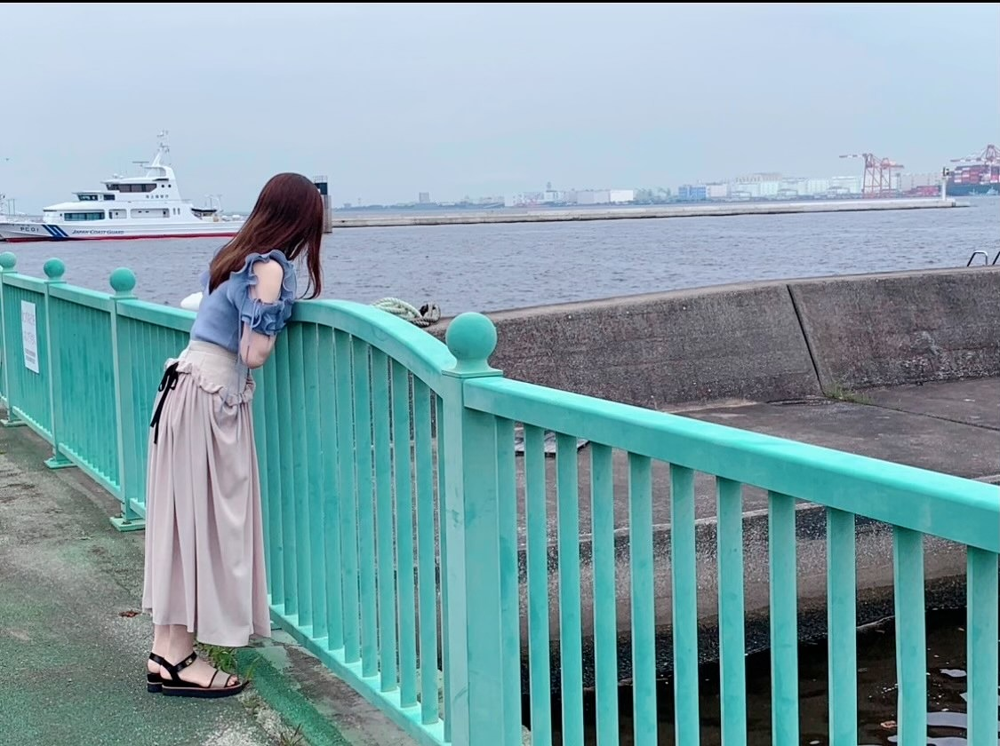
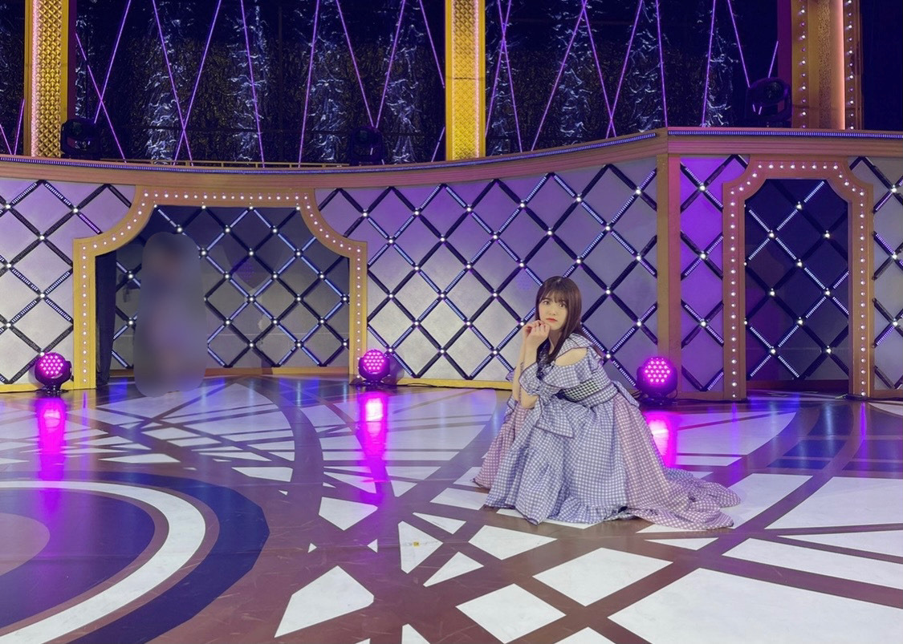
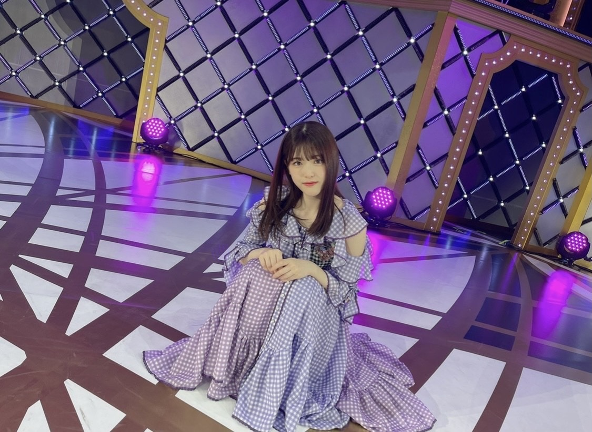
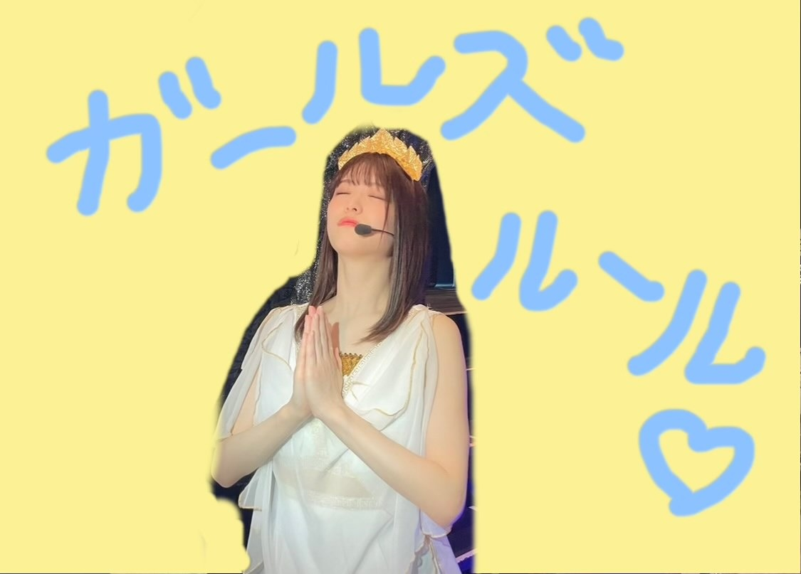

2021/0713Tueありがとうっ(o・・o)
松村沙友理です
本日7月13日をもちまして
乃木坂46を卒業します。
たくさんの応援ありがとうございました。
秋元先生に書いてもらった
さ〜ゆ〜Ready?の歌詞の通り
完全燃焼できました！
みなさんのおかげで
幸せなアイドル人生でした。
乃木坂46の一員であったことを誇りに
さゆりんご頑張ります
これからも応援よろしくお願いします。
自分の思いの丈は
卒業記念写真集の
ロングインタビューと
手書きのメッセージに込めました。
ここでは、言いづらい事も
全部詰め込みました。
手に取って読んでくださる方に
伝わりますように
本当にありがとうございました。
個人のHPも開設しました。
よろしくお願いします！
またお会いできる日を楽しみにしております♡


2021/0705Mon"これが最後"が多くなってっ(o・・o)
松村沙友理です


そろそろわたしの卒業が近づいて参りました！
卒業コンサートも無事に終わりました！
卒業コンサートはどの曲にも思い入れがあるので
ゆっくり書いていきたい...気持ちです。
今回はある日の私の心境を
ただつらつらと書きたいと思います
卒業を間近にした一人のアイドルの
なんて事ない記録だと思って適当に読んでもらえたら嬉しいです。
先日のTHE MUSIC DAYさんで
乃木坂46としてパフォーマンスするのは最後でした！
これまでも沢山の音楽番組で
私の卒業に触れて頂いて
花束なんか貰っちゃって
私は 自分の気持ちを話す時間を貰えたり
私なんかの為にお花まで用意してくださる事が
ただただ嬉しくて 心からの幸せを感じていました。
だからどの番組でもニコニコと
わーい♡はっぴー♡で過ごしていましたが
ついに本当の最後の日がきました。
私が大好きなメンバーと一緒に
歌って踊って笑い合える最後の日
メイクをしている時も
楽屋でみんなで番組を見ている時も
自分の出番を袖で待っている時も
何をしていても全てに最後だという
実感が湧いてきて
気を抜いたら泣いちゃうなと
ずっと涙を堪えていました。
泣いても良かったんじゃない？と
ファンの皆さんは言ってくれそうだけど
ただ泣くのが恥ずかしかったんです。笑
私の変な照れ隠しだったのかもしれません。
いつも通り終わりたかったのかもしれません。
メドレーが始まる前に
ぐるぐるカーテンのポジションに着いて
かっきーと久保ちゃんに挟まれて
「この二人に挟まれたら歌も上手に歌えそう〜♡」なんて冗談を言って後輩を困らせている時も
ずっとずっと
涙を我慢していました。
メドレーが始まると
不思議と涙は出なくって
このまま終わるのだと思ったら
ラストの曲
"ごめんねFingers crossed"
紙吹雪がスタジオに舞って
「お祝いメッセージが書かれています」のカンペを持ったスタッフさん
なんだろうと思って
紙を拾ってみると
"さゆりんご大好きだよー！"
"さゆりんお疲れさま"のメッセージ
今まで我慢していたものが
溢れでそうになりました。
スタジオ中に舞う沢山のメッセージ
書かれているりんごの絵
これはもう無理だ〜と思いながらも
泣かないと決めていたので
頑張って笑っていると
いくちゃんが
"これ！"と渡してくれた紙には
"軍団永久不滅！！"の文字
そして、私が持っていた紙には
"からあげ姉妹"の文字
手書きのメッセージ一枚一枚が
私にとって最高のサプライズでした。
本当に嬉しくて嬉しくて
生放送だから急いでステージを
おりながら 何枚か拾ってきました。
そしてそのメッセージを握りしめて
帰り道一人で静かに泣きました。
これが私が最後にパフォーマンスした日の記録です。
今回はゴミと間違えて捨てたりはしません。笑
2021/07/05 20:30｜個別ページ｜コメント(1449)
2021/0621Monさ〜ゆ〜Ready?つ(o・・o)
松村沙友理です
明日から横浜アリーナで
「さ〜ゆ〜Ready?」はじまります
どきどきです。
久しぶりの有観客ライブ
いくつかの制約はありますが
ライブが開催できること
心から感謝します。
２３日は配信もありますので
見守っていてくださいね
このライブを作るにあたって
あーだこーだと色々言っちゃったのに
その全てを形にしてくれた
優秀過ぎるスタッフさんにも
心から感謝しております
ギリギリまですみません。
メンバーもほんまに忙しいのにたくさんありがとう！
ほんまみんな素敵な子すぎて大好き...♡
ファンのみなさんにたのしんでもらえますように〜
白米様〜よろしくお願いしますね〜
EX大衆
Newtype
日刊スポーツ"坂道の火曜日"
CanCam
anan
出させていただいてます！
みてねー！！

2021/0415Thuいつも応援してくださる、みなさんへっ(o・・o)
松村沙友理です。
私、松村沙友理は
27枚目シングルの活動を持ちまして
乃木坂46を卒業します。
先程2013年からずっと
お世話になっている「生のアイドルが好き」の
番組内で発表させて頂きました。
この番組は私にとっての初めてのレギュラー番組で
未熟な私たちにMCを任せて頂けて
とても嬉しくて楽しくて
そして８周年を迎えた今も変わらず
私に居場所をくれる大切な番組です。
みなさんのことを直接感じたくて
直接 卒業すると伝えたくて
大好きなこの番組さんにお願いしました。
急遽、発表する場所を作って頂き
本当にありがとうございます♡
10年目を目前にして
新しい道に進むことになりました。
今までたくさん支えてくださり
ありがとうございます。
大好きな乃木坂46から卒業するのは
とても寂しいですし
乃木坂46じゃなくなった自分を
想像すると怖い気持ちもありますが
ここで終わりにすることに決めました。
コロナ禍で
みなさんと会うことが難しくなってしまった今
卒業するのはどうなのだろうと悩みましたが
新しい世の中になってきて
皆さんとの新しい未来が何となく見えてきて
少しずつ先のことを考える時期が来たのかなと
決意いたしました。
今後のことはまだ決まっていないことも多いですが
芸能活動は続けていく予定です。
それでもやっぱり寂しいので
最後に出来るだけ皆さんに
恩返しができたらいいなぁと思っています。
そしてさゆりんご軍団でのライブが
開催されることも決まりました♡
詳しい日程や場所はまだ未定ですが
６月頃を予定しています。
私の大切なさゆりんご軍団で
また集まれることが本当に楽しみで
いまから 何をしようかなとわくわくしています♡
お忙しいとは思いますが
ぜひ私たちに会いに来て下さると嬉しいです。
残り少ない乃木坂46での時間を
思い残すことがないように
精一杯楽しみます。
みなさんともたくさん思い出を残したいです。
乃木坂46の松村沙友理
最後のその日まで
よろしくお願いします。
2021/04/15 23:36｜個別ページ｜コメント(4070)
2021/0411Sun秘蔵ってほどでもないけどっ(o・・o)
松村沙友理です。
今日は
乃木恋の彼氏イベントでした！！
100人の彼氏と自分達で考えたクイズ大会したよっ♡
めっちゃ楽しかった！！
きてくれたみんなありがとー♡
約束したから
ライブの秘蔵写真をUPするよ♡
ぐるぐるカーテンの衣装♡



最近
エヴァンゲリオンの話しかしてないくらい
現場で毎日エヴァの話しちゃう♡
話しても話しても楽しい！
何回見ても面白い！
エヴァが完結する時代に生きてて良かったー！
私はいつまでも
アスカの幸せを願っているよー!！